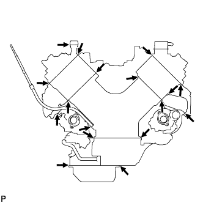

EMISSION CONTROL SYSTEM > ON-VEHICLE INSPECTION |
| 1. CHECK SEATING OF EGR VALVE (w/ EGR System) |
Start the engine, and then check that the engine starts and runs at idle.
| 2. CHECK ENGINE CONDITION (w/ EGR System) |
Connect the intelligent tester to the DLC3.
Start the engine, then run it at idle.
Turn the intelligent tester on.
Warm up the engine.
Enter the following menus: Powertrain / Engine / Data List / Actual EGR Valve Pos. or Actual EGR Valve Pos. #2.
Check that the value of the EGR angle is within the specification.
| Engine Condition | EGR Valve Opening Angle Expressed as Percentage |
| During idling | 0 to 80% |
Turn the engine switch off.
| 3. CHECK EGR VALVE OPERATION (w/ EGR System) |
Turn the engine switch on (IG).
Turn the intelligent tester on.
Enter the following menus: Powertrain / Engine / Active Test / Control the EGR step position or Control the EGR step position #2.
Check the Data List / EGR Lift Sensor Output, Actual EGR Valve Pos. or Actual EGR Valve Pos. #2 reading.
| Control Range Condition | Specified Condition |
| Active Test performed (Set EGR position to 100%) | EGR Valve Angle: 73 to 100% |
| Active Test performed (Set EGR position to 0%) | EGR Valve Angle: 0 to 27% |
| 4. CHECK MAF AMOUNT (w/ EGR System) |
Start the engine, then run it at idle.
Warm up the engine.
Turn the intelligent tester on.
Enter the following menus: Powertrain / Engine / Data List / MAF.
Check the MAF reading.
Enter the following menus: Powertrain / Engine / Active Test / Control the EGR step position or Control the EGR step position #2.
| Engine Condition | Active Test Condition | MAF Reading |
| Idling | Active Test performed (Set EGR position to 0%) | Air flow amount changes (Approximately 7.8 to 26.5 g/sec.) |
| 5. VISUALLY INSPECT HOSES, CONNECTIONS AND GASKETS |
 |
Visually check that the hoses, connections and gaskets have no cracks, leaks or damage.